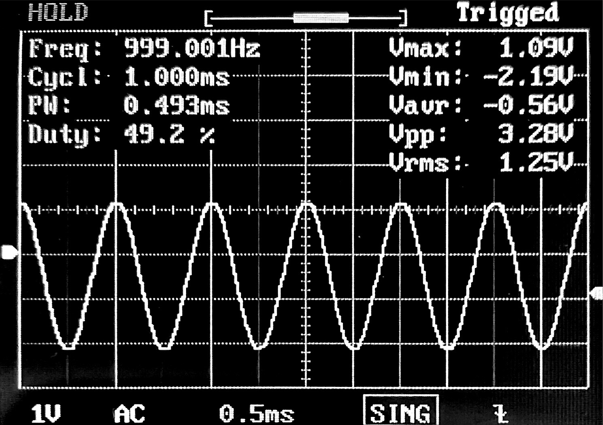

Baptiste LE ROUX - Melvin DUBEE - Tanguy ROUDAUT
Présentation
Explication du projet
Au cours des 30 créneaux dédiés au projet il nous a été demandé de réussir à enregistrer un son de quelques secondes sur la carte STM32 fournie via un micro MEMS et le rejouer sur des hauts-parleurs via le DAC.
Pour nous organiser et avancer progressivement vers le résultat final, nous avons commencé par apprendre les bases, que ce soit sur la configuration de la carte STM32, l'utilisation de composants comme le DMA, le DAC etc, ou encore l'utilisation de GIT pour certains membres du groupe.
Nous avons illustré notre apprentissage dans la rubrique Exemples, comme allumer une LED, afficher un message dans le moniteur série avec l'UART, générer un signal en sortie avec le DAC...
Après avoir atteint une certaine maitrises de ces différents aspects nous avons mis bout à bout nos connaissances en produisant la chaine complète du projet ci-dessous :

Vue schématique du projet:
flowchart LR
subgraph STM32
SAI
DMA1
DMA2
subgraph Traitement Du Signal
CPU
RAM
end
DAC
end
subgraph Acquisition
MEMS[Micro PDM MEMS]
end
subgraph Restitution
CASQUE[Sortie audio]
end
MEMS-->SAI
SAI-->DMA1
DMA1-->RAM
CPU<-->RAM
RAM-->DMA2
DMA2-->DAC
DAC-->CASQUE
Matériel
Pour mener à bien ce projet, nous avons utilisé une carte STM32F4290I-DISC1, un micro PDM, une sortie Jack, un casque, et le logiciel STM32CubeIDE.

Utilisation
Pour tester le projet, vous aurez besoin du materiel cité précédemment. Suivez les instructions suivantes :
- Connectez la carte STM32 à votre pc via le periphérique ST-Link et lancer le logiciel STM32CubeIDE.
- Ouvrez le projet récupérable sur le git et flashez la carte avec le code main.c
- Connectez le haut parleur ou le casque audio sur les pin.
- Appuyez sur le bouton noir pour lancer/recommencer l'enregistrement, puis appuyez sur le bouton bleu pour le jouer.
Acquisition
Le PDM
Le PDM (Pulse-Density modulation) soit modulation par densité d'impulsions est utilisé pour réprésenter un signal analogique en signal binaire. Le principe est le suivant, on a un signal audio sous sa forme analogique que l'on va chercher à enregistrer. Pour cela, on va coder chaque échantillon du signal sur un seul bit. Chaque échantillon est quantifiée à une valeur. Si l'échantillon (postion n) à une valeur inférieure à léchantillon précédent (position n-1) alors son bit sera codé à 0, sinon si sa valeur est supérieure alors son bit sera codé à 1. C'est donc une comparaison à chaque instant d'échantillonage avec le précédent qui permettra de moduler notre signal audio. Cette méthode à un nom, la modulation Delta.
Pour mieux visualiser, voici un schéma explicatif :

SAI
Le SAI (Serial Audio Interface) est une interface permettant au microcontrôleur de communiquer avec plusieurs dispositifs audio externes dont les microphones. Sur le STM32, le SAI a une interface PDM dédiée, ce qui permet directement d'acquérir un signal audio en entrée. Pour notre projet, c'est donc cette interface qui nous intéresse. Si on veut acquérir un signal audio, il faut donc que notre microphone soit connecté au SAI en configuration mono et mode de réception maître.
Voici le schéma de connection d'un microphone en mode mono sur l'interface SAI :

La broche nommée LR sur le schéma ci-dessus est une broche de sélection de canal du microphone qui peut être connectée soit à Vdd, soit à GND. En fonction du canal selectionné, on choisit si le microphone émet les données sur les fronts montants ou descendant de l'horloge. Le front d'échantillonnage de l'horloge SAI doit être configuré en conséquence. Selon la documentation (voir ci-dessous), on a le choix entre 16 KHz ou 48 KHz pour Fe, nous avons fait le choix de 48 KHz puisque cela nous induit une meilleure qualité audio. Le front d'échantillonage de l'horloge SAI sera donc de 3.072 MHz.
Les échantillons audio en entrée sont acquis par broche de sortie de données (DOUT) du microphone numérique via la broche de données série (SD), sur le schéma ci-dessous on voit que c'est la sortie PE6.

DMA
Le DMA (Direct Memory Access) soit accès direct à la mémoire permet de stocker directement des données venant d'un périphérique en mémoire principale de la machine. C'est à dire que le microprocesseur n'intervient pas lors du transfert. La conclusion du transfert de donnée peut être signalée par interruption, cela sera utile dans le cas de notre projet. Le DMA est surtout utile quand on travail avec de grandes quantités de données, le processeur peut rapidement être ralenti si tous les octets doivent passer par l'unité centrale. L'utilisation du DMA permettra donc de transférer des données sans qu'aucun code ne soit exécuté.
Voici un schéma explicatif pour mieux comprendre le principe du DMA :
Schéma simplifié d'un transfert de mémoire dans un microprocesseur

Schéma d'un transfert de mémoire avec l'aide du DMA
Pendant que les données sont transférées avec le DMA, l'unité centrale peut travailler sur d'autres choses. En effet, étant donné que le signal audio est lourd, il est essentiel de traiter les données en même temps que de les passer en mémoire. On va donc procéder de la manière suivante, le tableau de donnée renseigné à partir du SAI va être scindé en deux parties, la partie MSB et LSB. On verra dans la prochaine section comment traiter ces deux parties.
Pratique
Dans cette partie on va voir dans un premier temps la configuration de l'horloge et du SAI en mode DMA et dans un second temps le code implémenté pour la réception via le SAI en mode DMA.
Configuration horloge du SAI

Configuration du SAI
Configuration du DMA lié au SAI
Code pour l'acquisition du signal audio
#define PDM_DATA_SIZE 8
#define PDM_NB_SAMPLE_BY_FRAME PDM_FRAME_LENGHT/PDM_DATA_SIZE
#define NB_FRAME_IN_PDM_BUFFERSIZE 20
#define PDM_BUFFERSIZE PDM_NB_SAMPLE_BY_FRAME*NB_FRAME_IN_PDM_BUFFERSIZE
uint8_t pdmBuffer[PDM_BUFFERSIZE];
HAL_SAI_Receive_DMA(&hsai_BlockA1, (uint8_t *)pdmBuffer, PDM_BUFFERSIZE/2);
HAL_TIM_Base_Start(&htim2);
Conversion des données PDM → PCM
Le PCM
Le PCM (Pulse Code With Modulation), est un signal numérique produit à la suite d'une chaîne d'opération: Échantillonnage, quantification et codage.
Comme on peut le constater sur la figure suivante le signal est échantilloné à une fréquence fe et chaque échantillon représente une impulsion à une certaine amplitude.

Si l'on compare l'allure d'un signal PDM à celle d'un signal PCM, on remarque 2 différences principales:
- La fréquence d'échantillonnage du signal PDM est plus importante que celle du signal PCM
- Le signal PDM possède des amplitudes binaires (0-1) alors que l'amplitude du PCM est numériques.

Conversion
Conversion selon STM
Ils existes plusieurs solutions, pour réaliser une conversion PDM vers PCM. Selon la documentation de STM32 il est conséillé de suivre la procédure suivante :

Il faut dans un premier temps utilisé un filtre passe-bas pour convertir les données PDM en PCM. La convertion ce fait grâce à un filtre FIR, l'objectif est de multiplier les échantillon PDM par les coéficient du filtre et de faire une somme pondéré. Au final on se retrouve avec des données numériques, c'est à dire un signal PCM

Ce filtre permet également de réduir la fréquence d'échantillonage, mais insuffisament. Pour obtenir la fréquence d'échantillonage du PCM il faut procéder à une décimation, avec un facteur de décimation approprié.

Notre conversion
Dans le cas du projet, nous avons simplifié la conversion. Nnous allons simplement réaliser une décimation. Une décimation tout de même un peu particulière puisqu'en plus de décimé notre signal on va convertir nos bits en données numériques, c'est à dire en PCM.

Comme expliqué précédement le PDM est configuré à une fréquence d'échantillonage de 3.072 MHz, ce qui est beaucoup plus important que la fréquence cible du PCM qui est de 48kHz. L'objectif est donc de réduire la fréquence du signal PDM.
La décimation permet de réduire la fréquence d'échantillonage d'un signal en prenant seulement un échanitillon tous les n-échantillons:
C'est donc idéal pour notre cas d'utilisation.
Pour déterminer le facteur de décimation on peut appliquer la formule de la figure précédente. Après calcul on trouve un facteur de décimation de 64. Si on prend donc 1 échantillon PDM tout les 64 échantillons on obtiendra un signal avec une fréquence de 48kHz.
Seulement, prendre 1 échantillon tout les n-échantillons, permet uinquement de réduire la fréquence d'échantillonage du signal, pas de convertir en PDM → PCM. On va donc compter tous les bits à 1 dans une trame de 64 bits, ce qui nous permettra d'obtenir une valeur entre 0 et 64.
Au final on obtiendra un signal PCM avec un certain nombres d'impulsions, des amplitudes situé entre 0 et 64 avec une fréquence d'échantillonage de 48kHz.

Mise en pratique
Variables
Nous avons besoins d'un certains nombre de variables.
- Le
pdmBufferprésenter à la partie précédente qui contient les valeurs PDM du DMA - Le
pcmBuffer, il contiendra les données pcm convertis d'un demi DMA - le
pcmData, il contiendra toutes les données pcm convertis.
#define NB_FRAME_IN_PDM_BUFFERSIZE 20
#define PDM_BUFFERSIZE PDM_NB_SAMBLE_BY_FRAME*NB_FRAME_IN_PDM_BUFFERSIZE
#define PCM_BUFFERSIZE NB_FRAME_IN_PDM_BUFFERSIZE/2
#define PCM_SAMPLING_RATE 48000
#define NB_SEC_OUTPUT 1
#define PCM_NB_SAMPLE (NB_SEC_OUTPUT*PCM_SAMPLING_RATE)
uint8_t pdmBuffer[PDM_BUFFERSIZE];
uint32_t pcmBuffer[PCM_BUFFERSIZE];
uint32_t pcmData[PCM_NB_SAMPLE];
Lecture du DMA
Comme expliqué dans la partie de l'acquisition, nous travaillons en demi DMA pour des soucis de stockage et de conversion en temps réel. Quand un demi DMA est plein, les données PDM sont disponible pour être convertis en PCM.
Il faut donc savoir qu'elle partie du DMA est plein pour procédé à la conversion.
STM nous donne accès à deux fonctions d'interruptions que l'on peut modifier pour mettre des flags à 1.
- Une intérruption pour déterminer si la moitié du DMA est plein:
void HAL_SAI_RxHalfCpltCallback(SAI_HandleTypeDef *hsai) - Une intérruption pour déterminer si le DMA est plein:
void HAL_SAI_RxHalfCpltCallback(SAI_HandleTypeDef *hsai)
Grâce à c'est fonction on peut facilement déterminer qu'elle partie du DMA est pleine et doit être convertis en PCM.
while (recording){
if(dmaLSBFull || dmaMSBFull){ // si l'une des moitié du DMA est pleine
if (dmaMSBFull){
dmaMSBFull = 0; // remise à 0 du flag
pdm2pcm((uint8_t*)(pdmBuffer+PDM_BUFFERSIZE/2), pcmBuffer);
}
else {
dmaLSBFull = 0;
pdm2pcm(pdmBuffer, pcmBuffer);
}
}
}
Chaque interrupion on execute la fonction de conversion pcm2pdm avec en premier argument les donnés pdm (données dans le DMA) à convertir et en deuxième argument un tableau vide qui va nous permettre
de récuperer les données pcm convertis.
C'est dans le permiers argumets, où l'on donne le tableau des valeurs pdm qu'il faut spécifier sur qu'elle moitié du DMA on va travaillé.
- Si c'est la première moitié, il suffit de lui donné le tableau
pdmBufferen entier. C'est à dire que si notre tableau est de longueur 100, alors on commence à l'élement 0 et dans notre fonction on ira jusqu'à l'élément 49. - Si c'est la seconde moitié, alors on donne le tableau
pdmBuffer+PDM_BUFFERSIZE/2, c'est à dire que si notre tableau est de longueur 100, alors on commence à l'élement 50 et dans notre fonction on ira jusqu'à l'élément 99.
Conversion des données
Il est important de noter que dans la partie acquisition, nous avons configurer le SAI avec une longuer de frame de 64 bits et un type de données sur 8 bits. Nos valeurs dans le dma sont donc sur 8 bits. Nous on souhaite faire la somme du nombre de bit à 1 dans une frame (64-bits), pour cela on va créer un pointeur sur 64 bits vers notre tableau de 8 bits qui contient les données PDM: uint64_t* pdmFrameBuffer = pdmBuffer;
Maintenant que l'on à un pointeur de 64-bits sur notre tableau de 8-bits, on peut parcourire tout les frames de notre acquisition à l'ai d'une boucle for.
Pour compter les bits à 1 on utilise une fonciton integré au compilateur: __builtin_popcount, cela nous permet donc d'obtenir une valeur entre 0 et 64. Chaque frame de 8 échantillon PDM ce retrouve réduit à 1 échantillon PCM.
void pdm2pcm(uint8_t* pdmBuffer, uint32_t* pcmBuffer){
uint64_t* pdmFrameBuffer = pdmBuffer;
for (int frameNbr=0; frameNbr<NB_FRAME_IN_PDM_BUFFERSIZE/2; frameNbr++){
pcmBuffer[frameNbr] = (uint32_t)__builtin_popcount(pdmFrameBuffer[frameNbr]);
}
}
Arrêt de l'enregistrement
Les données d'un demi DMA sont maintenant convertissable à l'aide de notre fonction, mais il reste un problème. Il faut stocker c'est valeurs PCM.
Pour cela on à un tableau pcmData qui à une longeur de 48 000 échantillons, soit 1 seconde d'enregistrement avec une fréquence d'échantillonnage de 48kHz. A chaque fois que l'on obtient de nouvelles données PCM à la suite d'une conversion, il faut ajouter les données de pcmBufer dans pcmData.
Si pcmData est plein, dans ce cas il faut arrêter l'enregistrement.
Ce qui nous permet d'avoir le code suivant:
while (recording){
if(dmaLSBFull || dmaMSBFull){ // si l'une des moitié du DMA est pleine
if (dmaMSBFull){
dmaMSBFull = 0; // remise à 0 du flag
pdm2pcm((uint8_t*)(pdmBuffer+PDM_BUFFERSIZE/2), pcmBuffer);
}
else {
dmaLSBFull = 0;
pdm2pcm(pdmBuffer, pcmBuffer);
}
// ajout des données pcm convertis aux données finale
for(int i = 0; i<PCM_BUFFERSIZE; i++){
pcmData[pcmDataIndex]=pcmBuffer[i];
pcmDataIndex++;
if(pcmDataIndex >= PCM_NB_SAMPLE){
recording = 0;
HAL_SAI_DMAStop(&hsai_BlockA1);
}
}
}
}
Diffusion
La dernière étape de notre chaine de traitement consiste à diffuser le son enregistré précédemment dans la mémoire de notre STM32. Pour ce faire, nous devons piloter le DAc via le DMA et générer le signal vers une sortie audio, casque, hauts-parleurs...
Methodes utilisation du DAC
Le DAC ou Digital-to-Analog Converter est un composant matériel qui permet de convertir des signaux numériques en signaux analogiques. Sur une STM32, il peut être utilisé pour produire des signaux analogiques pour des applications telles que la génération de formes d'onde, la synthèse audio, le contrôle de moteurs, etc
Le DAC peut être configuré pour fonctionner avec différentes résolutions (8, 10, 12 bits), des tensions de référence internes ou externes, et des modes de sortie de signal (unipolaire ou bipolaire).
Methodes amplificateur
Le signal de sortie peut être amplifié pour réhausser le signal. On utilise un amplificateur en spécifiant un gain. Pour déterminer ce dernier, on s'appuie sur la partie décimation. Nous avons determiné précedemment qu'un échantillon (une frame) allait de 0 à 64. Or le DAC a une résolution fixée à 12 bits ce qui impose une valeur entière max de 4096. On peut donc déterminer la valeur max du gain par le calcul : Gain_max = 4096/64 = 64 Le Gain max est donc de 64.
Mise en pratique
Pour utiliser le DAC sur la carte STM32 on réalise deux étapes clés :
Configuration du setup
On configure le DAC sur la carte en choisissant une sortie, par exemple OUT1 indiquant la pin PA4. Dans notre cas nous activons aussi le DMA et un timer, et un bouton pour jouer le signal enregistré.

Une fois la configuration enregistré, nous pouvons générer le code.
Ajout de l'amplification
Avant de générer le signal, nous avons fais le choix de l'amplifier en fixant la valeur de gain à 80, qui est un bon compromis pour rehausser le niveau du signal en minimisant la saturation.
for (int i = 0; i < PCM_NB_SAMPLE; i++){
pcmData[i] = pcmData[i] * GAIN;
}
Ajout dans le code
Dans la boucle While du code, on ajoute la condition pour jouer l'enregistrement.
/* USER CODE BEGIN WHILE */
while (1)
{
if (HAL_GPIO_ReadPin(GPIOA, GPIO_PIN_0)){
HAL_DAC_Start_DMA(&hdac, DAC_CHANNEL_1, (uint32_t*)pcmData, PCM_NB_SAMPLE, DAC_ALIGN_12B_R);
HAL_Delay(NB_SEC_OUTPUT*1000);
HAL_DAC_Stop_DMA(&hdac, DAC_CHANNEL_1);
}
HAL_Delay(500);
/* USER CODE END WHILE */
}
Si l'utilisateur appuie sur le bouton pin0 de la carte, on lance la diffusion du signal avec la fonction HAL_DAC_Start_DMA(). En paramètre, on a renseigné le channel, la data, le nombre d'échantillons et la résolution de notre DAC.
Le signal se joue sur HAL_Delay(NB_SEC_OUTPUT*1000); soit une seconde, ce qui représente la limite de la durée du signal stockable.
Enfin, une fois le signal joué on stoppe le DAC à l'aide de la fonction DAC HAL_DAC_Stop_DMA().
Exemple
Pour débuter ce projet nous avons, pu découvrir la carte STM32 et s'est différentes possibilitées à l'aide d'exemples:
Clignotement d'une led
Préparation du projet

Configuration de la pin connecté à la LED
Modification du code
/* USER CODE BEGIN WHILE */
while (1)
{
HAL_GPIO_TogglePin(GPIOA, GPIO_PIN_5);
HAL_Delay(1000);
/* USER CODE END WHILE */
}
Clignotement d'une led avec un boutton
On considére que la configuration de la led à déjà était faite avec l'exemple 'toggle_led'
Configuration de la pin connecté au BP

Modification du code
/* USER CODE BEGIN WHILE */
while (1)
{
if (HAL_GPIO_ReadPin(GPIOC, GPIO_PIN_13)) {
HAL_GPIO_WritePin(GPIOA, GPIO_PIN_5, 1);
}
else {
HAL_GPIO_WritePin(GPIOA, GPIO_PIN_5, 0);
}
HAL_Delay(100);
/* USER CODE END WHILE */
}
UART - Affichage d'un message à l'appuie du bouton
On considére que la configuration de la led et du BP à déjà était faite avec l'exemple 'pushbutton_led'
Configuration de l'UART

Modification du code
/* USER CODE BEGIN 2 */
uint8_t *tx;
uint8_t cnt = 0;
/* USER CODE END 2 */
/* Infinite loop */
/* USER CODE BEGIN WHILE */
while (1)
{
if (HAL_GPIO_ReadPin(GPIOC, GPIO_PIN_13)) {
HAL_GPIO_WritePin(GPIOA, GPIO_PIN_5, 0); // led
}
else {
HAL_GPIO_WritePin(GPIOA, GPIO_PIN_5, 1); // led
cnt++;
sprintf(tx, "You have push the BP for the %d time\r\n", cnt);
HAL_UART_Transmit(&huart1, tx, sizeof(tx), 100);
}
HAL_Delay(200);
/* USER CODE END WHILE */
/* USER CODE BEGIN 3 */
}
Génération d'un signal de 1Khz
Configuration du DAC

On configure en plus le DMA qui sera associé au DAC

Configuration du Timer

Pour choisir les paramétres du timers pour une fréquence voulu on peut appliquer les formules suivantes :
$$ TriggerFrequency = OutputWaveFrequency * Ns$$
avec Ns le nombre de sample de notre signal
$$ (PSC+1)(ARR+1) = \frac{F_{CPU}}{TriggerFrequency}$$
Exemple: Pour un sinus avec une lookup table de 128 samples
Si l'on souhaite une freq de 1Khz:
$$ TriggerFrequency = OutputWaveFrequency * Ns = 1.10^3 * 128 = 128.10^3$$
$$ (PSC+1)(ARR+1) = \frac{F_{CPU}}{TriggerFrequency} = \frac{80.10^6}{128.10^3} = 625$$
On peut donc choisir un prescaler de 0 est un période de 625.

Si l'on souhaite une freq de 500Hz:
$$ TriggerFrequency = OutputWaveFrequency * Ns = 500 * 128 = 64.10^3$$
$$ (PSC+1)(ARR+1) = \frac{F_{CPU}}{TriggerFrequency} = \frac{80.10^6}{64.10^3} = 1250$$
On peut donc choisir un prescaler de 0 est un période de 1250. On sait que 1kHz c'est deux fois 500Hz. Au lieu de refaire le calcul on aurait simplement aussi pu garder une période de 625 et ajouter un prescaler de 2.

Code
/* USER CODE BEGIN 2 */
uint32_t Wave_LUT[128] = {
2048, 2149, 2250, 2350, 2450, 2549, 2646, 2742, 2837, 2929, 3020, 3108, 3193, 3275, 3355,
3431, 3504, 3574, 3639, 3701, 3759, 3812, 3861, 3906, 3946, 3982, 4013, 4039, 4060, 4076,
4087, 4094, 4095, 4091, 4082, 4069, 4050, 4026, 3998, 3965, 3927, 3884, 3837, 3786, 3730,
3671, 3607, 3539, 3468, 3394, 3316, 3235, 3151, 3064, 2975, 2883, 2790, 2695, 2598, 2500,
2400, 2300, 2199, 2098, 1997, 1896, 1795, 1695, 1595, 1497, 1400, 1305, 1212, 1120, 1031,
944, 860, 779, 701, 627, 556, 488, 424, 365, 309, 258, 211, 168, 130, 97,
69, 45, 26, 13, 4, 0, 1, 8, 19, 35, 56, 82, 113, 149, 189,
234, 283, 336, 394, 456, 521, 591, 664, 740, 820, 902, 987, 1075, 1166, 1258,
1353, 1449, 1546, 1645, 1745, 1845, 1946, 2047
};
HAL_DAC_Start_DMA(&hdac, DAC_CHANNEL_1, (uint32_t*)Wave_LUT, 128, DAC_ALIGN_12B_R);
HAL_TIM_Base_Start(&htim2);
/* USER CODE END 2 */